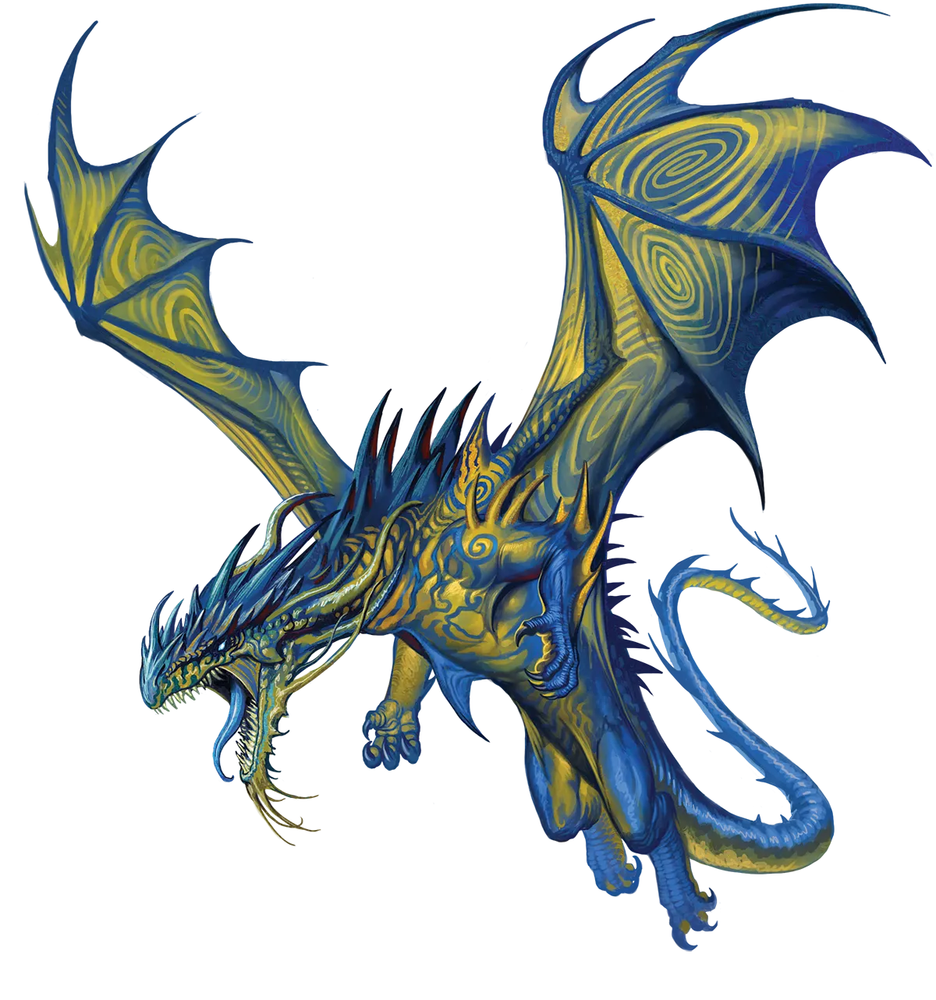
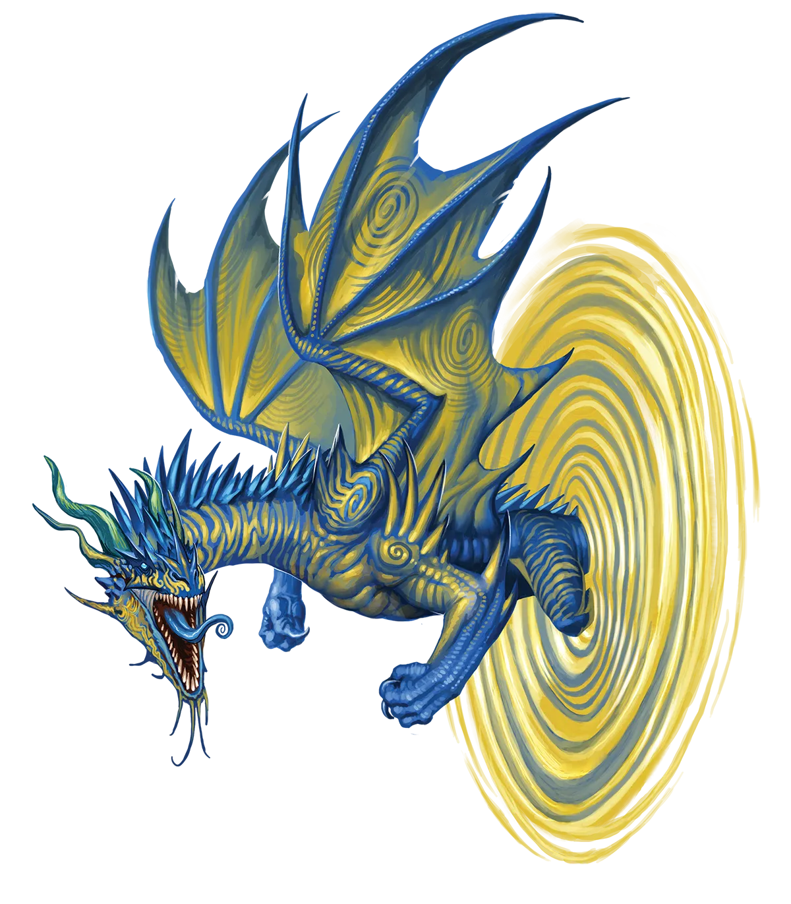

给你的传讯
讽刺的是，在反抗迫使他们充当使者的实体并夺回随心所欲的选择权后，相当数量的漩涡龙决定继续传递消息。当然，不再是主要职责，而是作为副业，或者如他们在冒险这一行所言，一个“支线任务”。如果你的队伍中有一条漩涡龙，别惊讶他们会捎上一些邮件送往你们的下一站。
漩涡龙 Vortex Dragon |
|
|
漩涡龙是出类拔萃的使者与观察员。那些萌生流浪期、渴望自行决定去向，而非替他人传讯或守望的个体，往往通过执行“永恒之光”仪式来把握自己的宿命。此举既斩断了形而上学层面束缚他们为虚空守护神效命的纽带，也因其一时无法完成任何此类使命而切断现实中的联系。即便如此，这也是一种极端手段，因为漩涡龙在仪式后的相当一段时间内，实质上被困在一个特定的凡人世界。对于一个习惯于穿梭于诸世界之间的存在而言，这种损失极为重大，唯有对自己做主的极度渴望方能超越。传统派漩涡龙对此举视为极度惊恐。对他们而言，这无异于为逃避工作而自残：不负责任、自我毁灭且令人厌恶。因此，传统派漩涡龙往往将永恒漩涡龙视为“不受欢迎之龙”，对其冷落，假装它们不值一哂。若永恒漩涡龙干涉了本应由传统派观察员注视的情景，情况则会恶化。尽管传统派仍视自身观察员角色为神圣不可侵犯，但有些龙认为，为防止永恒漩涡龙的行为――对这种观察员地位的侵扰性违背――必须予以阻止，以维护漩涡龙整体中立观察员地位。这通常意味着尝试在不干扰周遭任何东西或他人的情况下，尽可能将永恒漩涡龙从情景中解脱出来，甚至不惜使用暴力。当然，若些许干扰是防止永恒漩涡龙引发更大骚乱所必需的，那就随它去吧。 永恒漩涡龙热衷于在他们之前无尽游乐场现已局限的小小凡人世界中四处探索。他们不可避免地会被同具流浪期的结伙所吸引，尤其是那些寻求探索未知或未发现地城、地域与地点的群体。尽管如此，他们认为在这个小舞台上“任何东西”都能真正称得上“未知”颇为可笑。当你翱翔于整个世界之上时，你对其全貌一览无余。没有什么真正未被探索，总有人先行一步，即便最偏远的地点亦是如此。漩涡龙很快就会厌倦那些在特定定居点或地点设立单一营地并以此为基地进行所有冒险的冒险队伍。不过，他们也欣赏行动有条不紊的队伍。漩涡龙是出色的斥候，他们偏爱专注于移动与旅行的职业，以及那些能助其自主探索与观察的职业，如武僧、游侠或游荡者。 给你的传讯 讽刺的是，在反抗迫使他们充当使者的实体并夺回随心所欲的选择权后，相当数量的漩涡龙决定继续传递消息。当然，不再是主要职责，而是作为副业，或者如他们在冒险这一行所言，一个“支线任务”。如果你的队伍中有一条漩涡龙，别惊讶他们会捎上一些邮件送往你们的下一站。 漩涡龙特质 Vortex Dragon Traits 你出身于一脉穿梭于星际之间的信使――漩涡龙世系。 |
  |